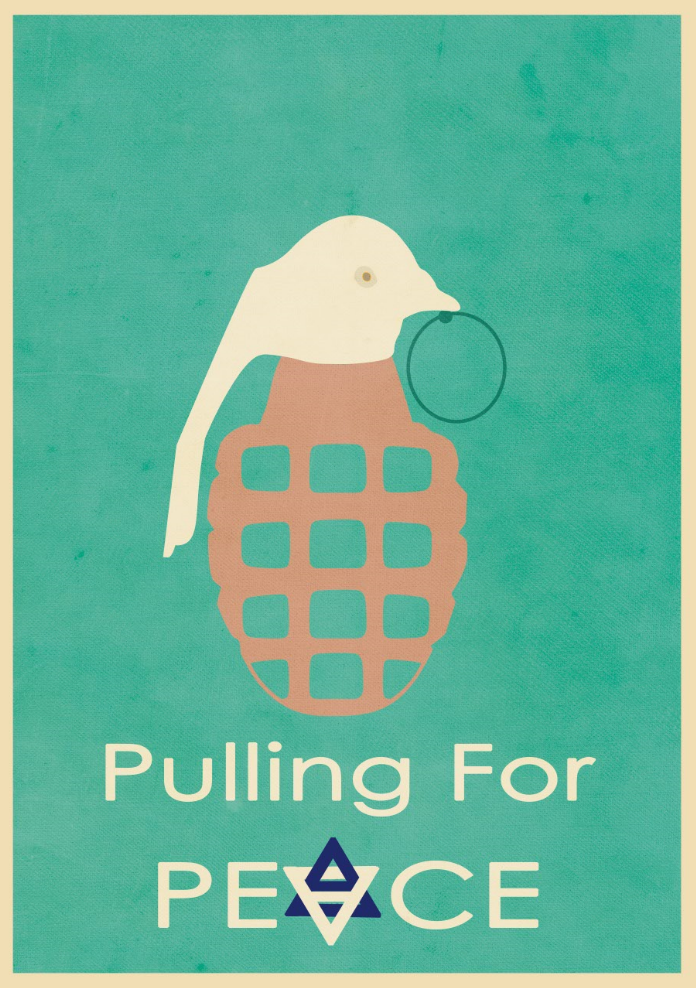

תוכנית ACT.IL קמה במטרה להשפיע בצורה חיובית על דעת הקהל הבינלאומית כלפי ישראל, באמצעות פעילות פרו-ישראלית מאורגנת ברשת ויצירת תכנים מותאמים לקהלי היעד .
התכנית בחסות IAC - Israeli American Council - המרכז הבינתחומי הרצליה והארגון IDC.
במסגרת הקורס 'גראפיקה ממוחשבת', לקחנו חלק בפרוייקט יצירת פוסטרים בנושא רב-גוניות ישראלית.
הפוסטר שלי:

מטרת הפוסטר באה לפנות לרגש הצופה ולהציג את ישראל באור חיובי, הוגן ואמיתי יותר כלפי שונאינו.
בפוסטר מוצג רימון יד. רימון יד הוא פצצה המיועד להרס, לפגיעה ואף מוות. אכן מוצג רימון יד בפוסטר, אולם זהו רימון יד שונה מהרגיל. זהו רימון יד הקורא לשלום.
נוכל לראות סממנים של שלום על ידי ציור היונה על הנוקר- יונה מסמלת את מושג השלום וההתנגדות למלחמות.